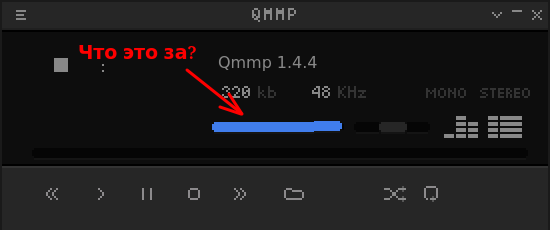
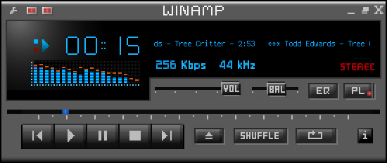

Музыкальный плеер QMMP относительно неплохо сделан, но как и всякое программное обеспечение для Linux, поставляется с весьма странными и неудобными начальными настройками.
Плеер WinAmp, поведение которого пытается копировать QMMP, с самых первых версий был сделан так, что при закрытии окна программы сам плеер не закрывался, а сворачивался в системный трей. И это было очень удобно: плеер долежн быть фоновой программой и его окно не должно путаться среди окон других открытых программ, если плеер неактивен и играет музыку в фоне.
В QMMP тоже есть такой функционал, но его нужно специальным образом включать.
Во-первых надо пройти в настройки в раздел:
Меню - Настройки - Модули - Общие
И в открывшимся списке проверить, имеется ли в наличии модуль (плагин) Модуль Status Icon. Если его нет, то необходимо этот плагин откуда-то установить. В дистрибутиве Debian 11 такой модуль установлен и подключен по-умолчанию. Если модуль есть, то его надо активировать - то есть, поставить галку рядом с его названием.
После активации данного модуля, в систрее появится иконка плеера QMMP. Однако, сворачивание в трей вместо выхода из программы еще работать не будет.
Во-вторых, что бы при нажатии крестика закрытия программы плеер не завершал свою работу, а сворачивался в трей, нужно сделать еще одну настройку:
Меню - Настройки - Вкладка Общие - Главное окно - Скрывать при закрытии
После внесения таких изменений в конфигурацию QMMP, его поведение при нажатии крестика станет аналогичным поведению WinAmp.
* * *
И еще одно замечание: стандартный скин, который поставляется вместе с программой, странно минималистичный, с почти круглой кнопкой STOP (хотя мы ожидаем квадратную), и с непонятными кривыми элементами управления:

Рекомендуется сразу найти на каких-нибудь сторонних сайтах дополнительные скрины для QMMP в формате *.wsz и установить их в следующем разделе меню:
Меню - Настройки - Внешний вид - Обложки
Взять скины можно, например отсюда:
http://imbicile.pp.ru/wp-content/uploads/2015/12/skins.zip
После установки скинов, можно, например, переключиться на скин AV Theme Pewter. Этот скрин более правильный и адекватный, и выглядит вот так:

И вот с такими настройками QMMP уже можно начинать использовать как нормальный музыкальный плеер, не удивляясь кривому интерфейсу, и не боясь, что при случайном нажатии на кнопку закрытия окна придется снова лезть в меню и запускать плеер заново.